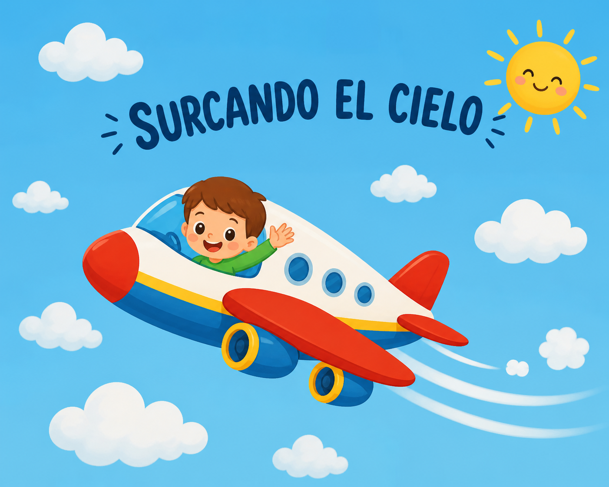

BIENVENIDO/A
A través de esta situación de aprendizaje “Surcando el cielo “, podremos subir al cielo y mirar el mundo desde arriba, explorar el el cielo, el aire y el movimiento.

Elaboración propia (IA)Despertaremos el interés y la curiosidad de los más pequeños a través de la observación, la expresión artística y el juego, empleando para ello recursos tecnológicos que emplearemos adaptándolos a nuestro nivel educativo.
DESCRIPCIÓN DEL PROYECTO
¿A quién va dirigido?
Centro de interés: El aire.
Temporalización: 4 semanas.
Nivel Educativo: 5 años .
Materias Implicadas: En esta situación de aprendizaje se trabajan de forma globalizada las tres áreas de educación infantil ( Crecimiento en armonía, Descubrimiento y exploración del entorno y Comunicación y representación de la realidad).
Idioma: Español (aprendemos vocabulario relacionado con el centro de interés).
¿Qué haremos?
El alumnado se convertirá en exploradores del cielo, donde podrán trabajar los diferentes medios de transporte aéreos, conocer los diferentes elementos que componen estos medios así como conocer las profesiones. También conocerán los diferentes elementos del cielo.
Viajaremos en diferentes medios cada semana será uno diferente. Introduciremos videos educativos donde se vayan familiarizando con el medio de transporte que vamos a trabajar . Trabajaremos mediante diferentes actividades manipulativas motivadoras y digitales.
La situación tendrá como producto final la creación de un “Libro digital” donde expliquen todo lo aprendido .
Cada niño participará en una escena y añadiremos fotos, dibujos escaneados, audios explicativos, videos cortos música de fondo...
DISEÑO UNIVERSAL DEL APRENDIZAJE
¿Cómo aplicaremos el DUA?
En lo que respecta a las medidas de atención a la diversidad, llevaremos a cabo una serie de medidas generales aplicadas a todo el grupo y unas medidas especificas para el alumno con NEAE.
E N C L A S E A P R E N D E R E M O S DE M U C H A S F O R M A S :
V E R E M O S I M Á G E N E S , V Í D E O S Y C U E N T O S .
E S C U C H A R E M O S C A N C I O N E S Y E X P L I C A C I O N E S .
T O C A R E M O S M A T E R I A L E S Y J U G A R E M O S .
P O D R E M O S H A B L A R , D I B U J A R Y E X P L I C A R L O Q U E A P R E N D E M O S .
C A D A N I Ñ O/A P O D R Á A P R E N D E R A S U R I T M O .
A S Í , T O D O S P O D E M O S P A R T I C I P A R Y D I S F R U T A R A P R E N D I E N D O .
Lectura facilitada
hola